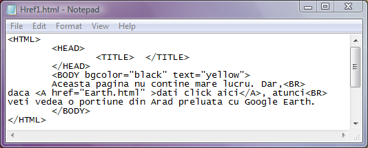
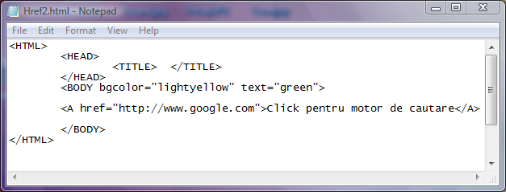
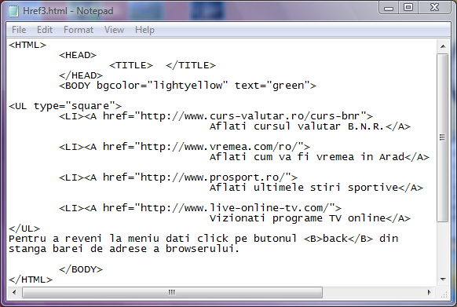

Stabilirea paginii web tinta a unei legaturi
Atributul href al etichetei A este cel care transmite browserului care pagina web urmeaza sa
fie deschisa. Valoarea acestui atribut este adresa paginii web ce se doreste a fi deschisa. De exemplu:
href="http://www.google.com" este o adresa URL (Uniform Resource Locator-Identificator Universal al
Resurselor) spre o pagina web aflata pe Internet.
href="D:/PaginiWeb/BancuriSeci.html" este o adresa de pe PC-ul local
href="Anecdote.html" este adresa unei pagini web aflata in acelasi dosar cu pagina curenta
Exemple
In toate exemplele ce urmeaza zona activa, cuprinsa intre etichetele A si /A, va fi text.
La click pe o legatura, locul vechii pagini web va fi luat de cea noua, in aceeasi instanta de browser.
Iata un exemplu spre o pagina web aflata in acelasi dosar. Click pe cod pentru a deschide pagina web.

Iata un alt exemplu in care legatura este tintita spre o adresa URL si anume spre pagina motorului de cautare
Google. Nu dati click pe cod decat daca aveti o conexiune la Internet.

Daca aveti o conexiune la Internet puteti da click pe codul urmator pentru a deschide o pagina web cu
un meniu care utilizeaza legaturi spre diferite pagini web. Zonele active sunt elementele unei liste
neordonate.

Inapoi la Legaturi...